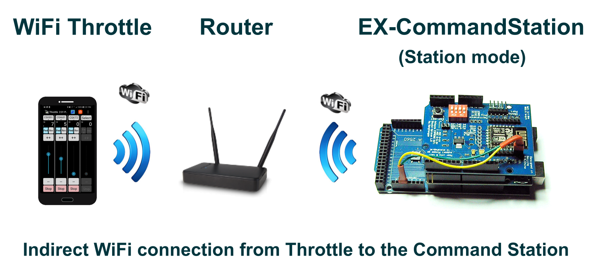
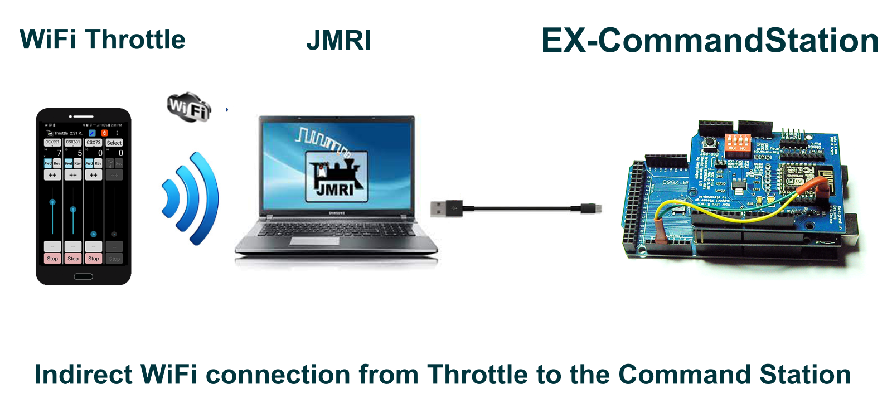
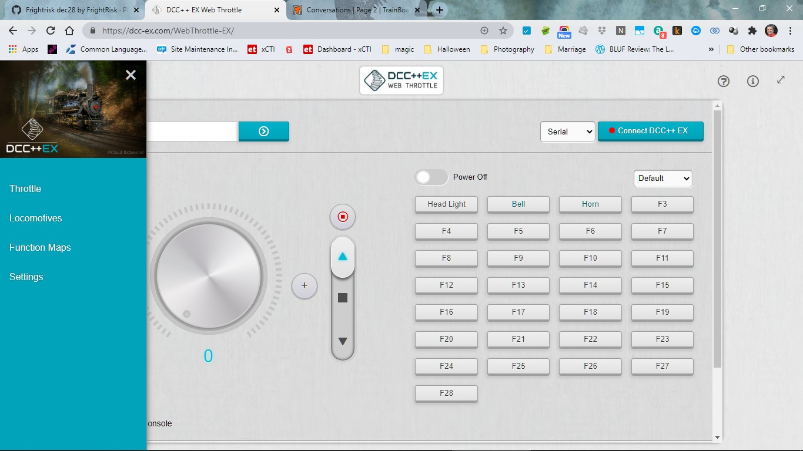
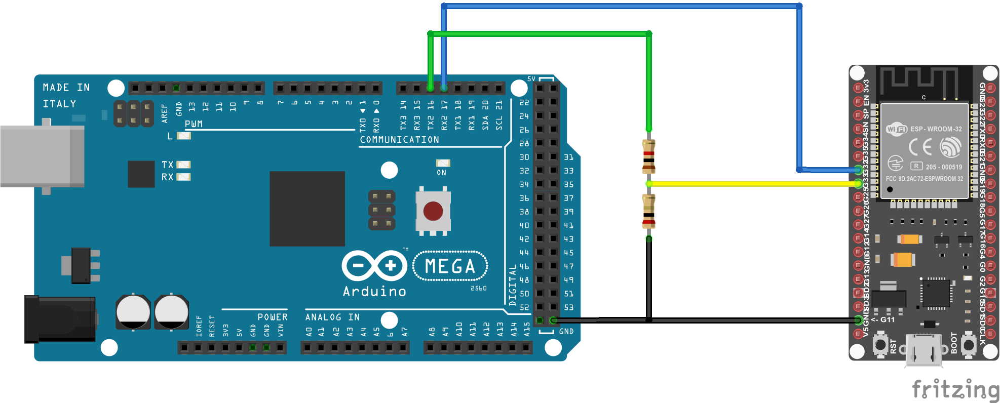

Choosing a Throttle (Controller) - Advanced

You need just two things that work together to operate your model railroad:
The EX‑CommandStation (aka CS)
A Controller (aka Front-end, Cab, or Throttle)
The EX-CommandStation
The Command Station is covered in the Getting Started section, and is usually an Arduino microcontroller and a motor driver. The Command Station accepts instructions from a controller and generates packets that are transmitted to your track.
The Controller
Since the Command Station simply accepts commands to turn into signals for your layout, you need something that sends those commands to run your trains - a controller. It isn’t very practical to type something like <t 1 3 75 1> into a serial monitor to tell your train to move each time! 😉 A controller can be a hardware device like a handheld throttle (also called a Cab), an App that runs on your phone, a Web Page, or front-end software like JMRI or Rocrail that runs on a computer or Raspberry Pi.
Connection Types
Your controller can connect to the EX‑CommandStation several different ways, such as:
Direct connection using a USB cable
2 wires to an Arduino serial port
Ethernet
WiFi
Bluetooth
Remote connection (VNC, MQTT, etc.)
The most popular methods for connecting your throttle are with a USB cable, or wirelessly with WiFi or Bluetooth. Make sure to check the feature list to see if your controller uses the type of connection you prefer.
Wireless Connection Details
Direct (Without JMRI)
For those who just want to run trains and not use any other control software, the simplest method to get going is to download a compatible phone or tablet app and connect directly from your wireless device to the EX‑CommandStation. You need a Command Station with a WiFi Shield or other type of WiFi board, or a Bluetooth board and a throttle that supports Bluetooth. Here is an image that represents a direct connection.

Indirect (Without JMRI)
An equally simple way to connect from your wireless device to the EX‑CommandStation is by connecting your command station to you home network. You need a Command Station with a WiFi Shield or other type of WiFi board. Here is an image that represents a indirect connection.
{kind=link}
With JMRI
For those who want the power of JMRI to operate a complex layout, you would install JMRI on a computer or Raspberry Pi and connect your throttle to JMRI wirelessly through its preferred method, usually the wiThrottle Server or Web Server Interface. Here is an image that shows connecting wirelessly to JMRI, and connecting JMRI via a USB cable to the Command Station.
{kind=link}
Command Language (API)
There are at least 3 ways for a throttle to ‘talk’ to a Command Station; the DCC-EX Native Commands, wiThrottle Protocol command language, and via the JMRI Web Server command language. For an explanation of what these terms mean, and what that means to you, please see Protocols: WiThrottle, DCC-EX Native Commands, and Web Servers Explained. EX‑CommandStation natively understands our own DCC-EX Native Commands and the wiThrottle Protocol API, and will work with a direct connection to these throttles. However, you can connect throttles to the computer running JMRI, and use JMRI as the middleware to send commands to EX‑CommandStation. JMRI uses DCC-EX Native Commands when speaking to the Command Station.
Compatible Throttles (Controllers)
Here is a list of some of the throttles you can use with EX‑CommandStation. We work closely with developers to help them maintain compatibility with the EX‑CommandStation. Check back on occasion, as new devices are being added all the time.
For more information on any of these throttles, you can click on their links below or see our Throttles Page Index.
Our EX-WebThrottle (DCC-EX | USB/Serial)
The simplest option is to just use a throttle connected directly to the EX‑CommandStation. The simplest of all is arguably EX‑WebThrottle, connected via a USB cable from your computer and web browser directly to the Command Station. You have control of multiple locomotives and can operate turnouts. There is a way to replace the USB cable with a wireless connection, but we will cover that later in the Wireless USB Bridge section. Below is a picture of EX‑WebThrottle with the side menu open. You can click on the image to see it full size.
{kind=link}
Here are your connections, just a computer running a chromium-based browser, a USB cable, and your EX‑CommandStation.

For operating instructions see how to use EX-WebThrottle
Engine Driver (Android | WiThrottle | WiFi)
Engine Driver is a throttle app for your phone that can control multiple locos and your turnouts. It uses an interface called “wiThrottle Protocol” (for WiFi Throttle). any wiThrottle Protocol compatible throttle will work with the EX‑CommandStation. There are two ways to connect it; the first method is by connecting directly to the Command Station via WiFi. You will need a WiFi board connected to the Command Station (see Wifi Setup WiFi Setup).
The second method is to use JMRI and connect Engine Driver (ED) to the computer running JMRI. That computer would then connect to the Command Station via a USB cable (normally) or via a Wireless USB Bridge. The computer running JMRI can be just about any type of computer: PC, Mac, or Raspberry Pi. However, most operators like the Pi option because it is inexpensive, small, can mount under the layout, and has a free image file that you can flash to a Micro-SD card and have a full JMRI setup with WiFi with virtually no fuss.
DCCpp CAB (Android | DCC-EX Native Commands | WiFi, Bluetooth)
DCCpp CAB is a throttle that natively speaks the DCC-EX Native Commands. It can connect via WiFi or Bluetooth! If you don’t need software like JMRI running on a computer, DCCpp CAB lets you connect directly to the EX‑CommandStation.
See DCCpp CAB Page
WiThrottle (iOS | WiThrottle | WiFi)
wiThrottle is an app for iPhones and iPads. It can connect directly to the EX‑CommandStation like Engine Driver does, or connect to JMRI on a computer and then have JMRI connect to the Command Station via a USB cable.
See WiThrottle Page
Locontrol (iOS | JMRI Web Server, DCC-EX Native Commands | WiFi)
Locontrol is a beautiful and functional throttle that uses the JMRI Web Server to connect. Soon it will be able to connect directly to the EX‑CommandStation by using the DCC-EX Native Commands set.
See Locontrol Page
DigiTrainsPro (Android, iOS, Windows | WiThrottle, DCC-EX Native Commands | WiFi)
This is the only throttle with a Windows App. It also has a beautiful user interface. Soon it will be able to speak directly to EX‑CommandStation using our command language.
SRCPClient (iOS | WiThrottle, DCC-EX Native Commands | WiFi)
Operate up to 3 locos from your iOS device. It supports both wiThrottle Protocol AND the DCC-EX Native Commands.
See SRCPClient Page
JMRI
JMRI is sort of the 800lb gorilla of front-ends! In its simplest form, it is a throttle, or a gateway to allow you to use Engine Driver, or a mouse or touchscreen, as a throttle without a WiFi board connected to the EX‑CommandStation. The WiFi is built into the computer you use to run JMRI, and JMRI has a wiThrottle Server built into it. The computer running JMRI, in turn, connects to the Command Station with a USB cable. JMRI is a complex program. If you are seriously into your model railroading however, JMRI can provide a lot of value. It can handle your turnouts, outputs, and sensors. It lets you create rosters for your locos and a visual layout of your tracks. There isn’t much it can’t do. And it is free and open source, just like DCC-EX!
Connecting via USB cable
Probably the way most people use JMRI is to have a Raspberry Pi running JMRI connected via a short USB cable to the EX‑CommandStation. They then use Engine Driver on their phone, connected to JMRI via WiFi as a throttle for their engines. If you want to actually operate using all the features of JMRI, you can connect a small monitor, keyboard, and mouse to your computer or Raspberry Pi. You can replace the USB cable with a USB Wireless Bridge which is covered in that section. But let’s look at another method next.
Todo
LOW - Controllers - diagram needed for the connection via USB Cable
Connecting via VNC
VNC stands for “Virtual Network Computing”, and it is a way to access a device remotely. Variations of this are called “Remote Desktop” in Windows, Teamviewer, Anydesk, etc. It is free and it lets you take another device, like a tablet, and have a viewport into the computer you are using to run JMRI. It literally is a “remote desktop”. Everything is running on your computer or Raspberry Pi, yet you can control it from a handheld wireless device with a touchscreen.
Todo
LOW - Controllers - diagram needed for Connecting via VNC
USB Wireless Bridge
The USB Wireless Bridge is a pair of small, inexpensive devices that let you replace a USB cable with a wireless connection. You really could connect any two devices that would normally connect with a USB cable. The power of this system is that there is little or no configuration, and no changes need to be made to your controller or the CS. In our world, here are some of the ways you can use it:
Connect WebThrottle-EX running on a laptop or tablet wirelessly to the EX‑CommandStation
Connect a computer or Raspberry Pi running JMRI (or another front-end) to the Command Station
Connect normally-tethered handheld cabs (throttles) wirelessly to the Command Station
Todo
LOW - Controllers - diagram needed for USB Wireless Bridge
For more information about all the throttles, see the Throttles Section>
2 Wires to Arduino serial port
It’s also possible to connect a throttle or controller directly to the EX‑CommandStation serial port Tx/Rx pins if it uses a logic level serial connection. This would be a common option for DIY throttles based on other Arduino platforms.
This is also the same method when using HC05/06 bluetooth devices, as outlined in HC-05/06 Bluetooth Modules.
If connecting to serial ports other than the default (eg. serial port 0 on the Mega2560), you will need to enable API commands for that specific serial port by editing your “config.h” file, and uncommenting the appropriate line. For example, to enable API commands on serial port 2, you need to uncomment this line:
#define SERIAL2_COMMANDS
Once you have uploaded the software again with this defined in “config.h” and your throttle is connected correctly, it will be able to perform all normal throttle functions via serial port 2.
Outside of physical connectivity considerations outlined below, the throttle developer should provide whatever other information is necessary to connect and use their throttle with your EX‑CommandStation.
Physical connectivity considerations
If connecting directly to Arduino pin serial ports, you need to ensure that the logic levels are compatible between the EX‑CommandStation and throttle. A 5V microcontroller connecting to a 3.3V microcontroller will likely lead to damage for the 3.3V microcontroller., so care must be taken here.
A common microcontroller used for DIY throttles is the ESP32, which is a 3.3V device, so therefore care must be taken when connecting to a Mega2560 EX‑CommandStation as these are 5V devices.
A simple resistor divider using a 1K and 2K resistor can solve this problem as per the provided diagram. Note, also, that the Tx pin of the throttle must connect to the Rx pin of the EX‑CommandStation, and likewise the Rx pin to Tx pin.
In this example, the ESP32’s pin 32 is used as the serial Tx pin, which connects directly to the Mega2560’s Rx2 pin. This doesn’t need a voltage divider, as the ESP32’s 3.3V output is sufficient to communicate with the Mega2560’s 5V input.
The ESP32’s pin 33 is used as the serial Rx pin, which requires the resistor divider to protect it from the Mega2560’s 5V output. The 1K resistor connects to the Mega’s Tx2 pin with the 2K resistor to ground, and the ESP32’s pin 33 connecting to where the two resistors join.
{kind=link}